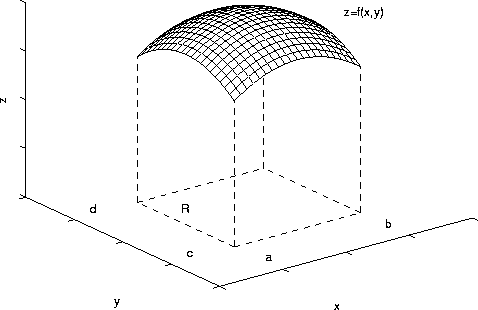
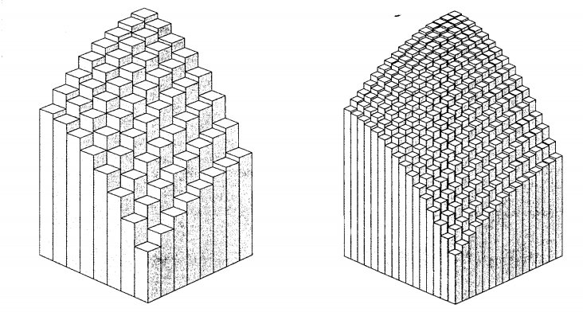
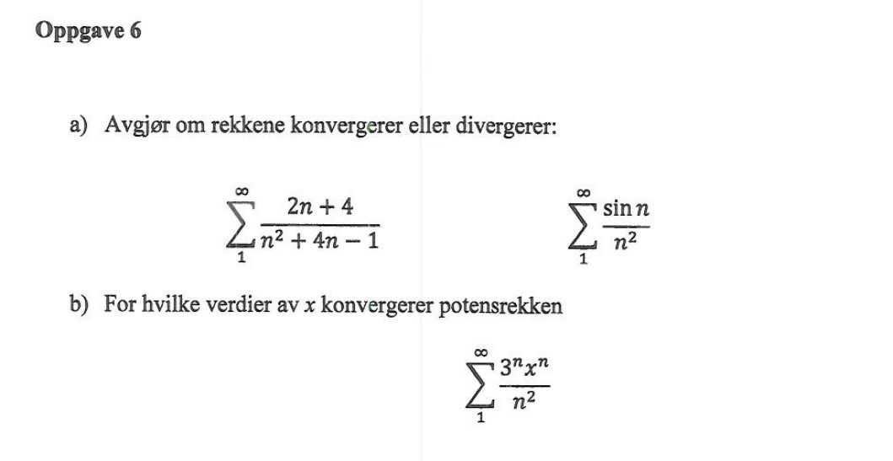
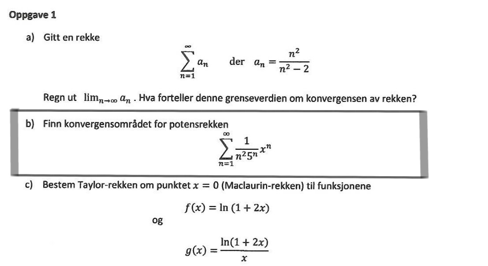
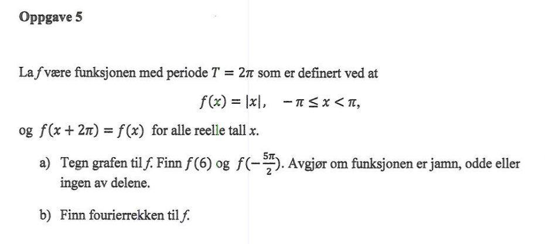
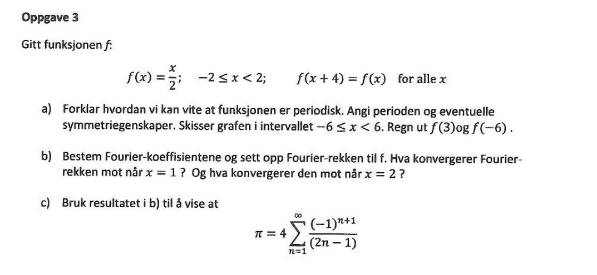

MAT106 for ELK og KOM
Uke 19
07.05.2015
Alexander
Trykk SPACE for å gå fremover, ESC for oversikt over slidesSist uke
Funksjoner av flere variabler (Kap. 11): Eksempel
Ekstremalverdier (Kap. 11.2)
Ekstremalverdier
Et kritisk punkt $(a,b)$ til $z=f(x,y)$ kan klassifiseres som lokalt minimum, maksimum eller sadelpunkt via Hesse-matrisen $$H = \left(\begin{array}{rr} f_{xx} & f_{yx} \\ f_{xy} & f_{yy}\end{array}\right).$$
For $(x,y) = (a,b)$:
- $\det(H) > 0$ og $f_{xx}>0$ $\,\,\Longrightarrow\,\,$ minimumspunkt
- $\det(H) > 0$ og $f_{xx}<0$ $\,\,\Longrightarrow\,\,$ maksimumsspunkt
- $\det(H) < 0$ $\,\,\Longrightarrow\,\,$ sadelpunkt
- $\det(H) = 0$ $\,\,\Longrightarrow\,\,$ ingen konklusjon
Dobbeltintegral og volum
Dobbeltintegral og volum
Tips til eksamenslesing
- Løs oppgaver! Spesielt gamle eksamensoppgaver
- Få oversikt over pensum. Lag pensumliste med nøkkelord
- Dann kollokviegrupper
- Spør om hjelp. Under forelesninger og spørretimer, eller via epost/itsLearning
- Sjekk alternative kilder. F.eks. andre lærebøker eller Khan Academy
Rekker og potensrekker
Rekker
$\color{blue}{\sum_{n=1}^N a_n}$ kalles delsummer
Konvergens
Rekken $\sum a_n$ konvergerer dersom grensen $$\lim_{N\rightarrow \infty}\sum_{n=1}^N a_n$$ eksisterer.
Dersom $\lim_{N\rightarrow \infty}\sum_{n=1}^N a_n = S$ kaller vi $S$ summen av rekken:
$$\sum_{n=1}^{\infty} a_n = S$$Eksempler
- Geometriske rekker:
$$\sum_{n=0}^{\infty} a r^n = \frac{a}{1-r}, \quad \mbox{dersom } |r| < 1.$$
Divergerer dersom $|r|\geq 1$. - p-rekker: $$\sum_{n=1}^{\infty}\frac{1}{n^p}$$ konvergerer dersom $|p|>1$, divergerer dersom $p \leq 1$.
Konvergenstester
Kan teste hvorvidt en rekke konvergerer (uten å finne summen)
Divergens-testen: Rekken $\sum a_n$ divergerer dersom $\lim_{n\rightarrow \infty} a_n \neq 0$.
OBS: Pass på retningen på implikasjonen!
Rekken $\sum 1/n$ divergerer selv om $\lim_{n\rightarrow \infty} 1/n = 0$.
Integraltesten
Dersom $f$ er kontinuerlig, avtagende og positiv så vil
$$\sum_{n=0}^{\infty} f(n) \quad \mbox{konvergere}$$hvis og bare hvis
$$\int_{n=0}^{\infty} f(x) dx \quad \mbox{konvergerer}.$$Oppgave: Konvergerer $\sum_{n=1}^{\infty} 1/n$? Hva med $\sum_{n=1}^{\infty} 1/n^p$ når $p>1$?
Sammenligningstesten
Dersom $a_n \leq b_n$, der leddene $a_n$ og $b_n$ er positive, og $\sum b_n$ konvergerer så vil $\sum a_n$ konvergere.
Dersom $a_n \geq c_n$ og $\sum c_n$ divergerer så vil $\sum a_n$ divergere.
Grensesammenligningstesten
Dersom
$$\lim_{n\rightarrow \infty} \left|\frac{a_n}{b_n}\right| = L, \quad \mbox{der } 0 < L < \infty$$så vil $\sum a_n$ og $\sum b_n$ enten begge konvergere eller begge divergere
Forholdstesten
Anta
$$ \lim_{n\rightarrow \infty} \left|\frac{a_{n+1}}{a_n}\right| = L.$$Dersom
$$\begin{align} L < 1 &\quad \mbox{vil } \sum a_n \mbox{ konvergere}\\ L > 1 &\quad \mbox{vil } \sum a_n \mbox{ divergere}\\ L = 1 &\quad \mbox{vil vi ikke få noen informasjon (bruk en annen test)} \end{align}$$Leibniz-testen
For alternerende rekker $\sum (-1)^n a_n$.
Dersom
$$\begin{align} &\mbox{(i) } a_n \geq 0 \quad \mbox{(positiv)}\\ &\mbox{(ii) } a_{n+1} < a_n \quad \mbox{(avtagende)}\\ &\mbox{(iii) } \lim_{n\rightarrow \infty} a_n = 0 \end{align}$$så vil
$$\sum (-1)^n a_n$$konvergere.
FOA162, Høst 2010. Oppgave 6
{kind=link}
FOA162, Vår 2010. Oppgave 1
{kind=link}
Fourierrekker
Dersom $f$ er en $2L$-periodisk funksjon er fourierrekken til $f$
$$\frac{a_0}{2} + \sum_{n=1}^{\infty} \left(a_n \cos\left(\frac{n\pi x}{L}\right) + b_n \sin\left(\frac{n\pi x}{L}\right)\right),$$der koeffisientene $a_0, a_1, a_2, \dots$ og $b_1, b_2, b_3, \dots$ er gitt ved følgende integraler
Fourierrekker
\begin{align*} a_0 &= \frac1L \int_{-L}^L f(x) \mbox{d}x \\\\ a_n &= \frac1L \int_{-L}^L f(x)\cos\left(\frac{n\pi x}{L}\right) \mbox{d}x \\ \\ b_n &= \frac1L \int_{-L}^L f(x)\sin\left(\frac{n\pi x}{L}\right) \mbox{d}x \end{align*}
Fourierrekker
Husk: Dersom $f$ er jamn eller odde kan vi spare litt tid når vi løser integralene.
NB: Ikke alle funksjoner er odde eller jamne; noen er hverken-eller.

FOA162, Høst 2010. Oppgave 5
{kind=link}
Plot av første par ledd i fourierrekken:
plot pi/2 - (4/pi) * (cos(x) + cos(3x)/3 + cos(5x)/5 + cos(7x)/7 + cos(9x)/9), x=-3pi..3piFOA162, Vår 2010. Oppgave 3
{kind=link}
Plot av første par ledd i fourierrekken:
plot 2/pi * ( sin(1*pi*x/2) - 1/2 * sin(2*pi*x/2) + 1/3 * sin(3*pi*x/2) - 1/4 * sin(4*pi*x/2)), x=-6..6Bølger og frekvenser